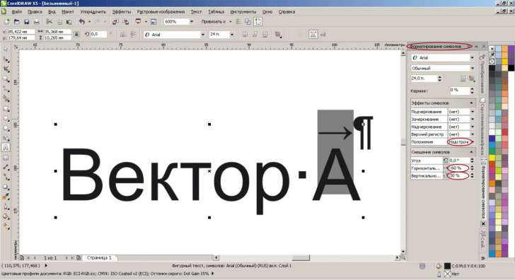

ВОПРОС / ОТВЕТ ДЛЯ НАЧИНАЮЩИХ
polzovatel-902 / 13.07.2010, 09:21/00:41
Форум:
Объясню на примере, чтоб было понятней... Открываю в кореле картинку (футболку с надписью) в формате JPG, мне нужно вытянуть из футболки надпись, т.е разъеденить файл... Говорят нужно формат изменить, еще что-то... Объясните, пожалуйста, что нужно сделать для этого...? Заранее спасибо.
если этих векторов мало, то можно и вот так (см. картинку),

а если вы книгу делаете, то бростье это гиблое дело и мучайтесь уж лучше в ворде (если ТеХ не знаете).
в ворде хоть както этот вопрос решен в отличии от корела.
кстати, надстрочным символом можно и не делать, но тогда стрелка будет большого размера, а так она чуть уменьшена.
Можно ли с помощью инстумента "трехточечная кривая" рисовать прямые линии ? Пару раз у меня непроизвольно это получалось , но как это произошло так и не понял . В справке корела ответа не нашел.
Это нужно чтоб лишний раз не переключатся на инструмент F5.
Можно ли в X5 , вствить иконки инструментов из старых версий (12 например) ?
Можно ли в X5 сделать более мелкий шаг зума ? Такая возможность была по моему в х3 .
FCSD,
1. Для рисования кривых с прямыми отрезками лучше всего подходит инструмент Polyline.
2. Иконки можно импортировать, но только вручную
3. Зум не настраивается. В Х3 такая возможность была скорее всего благодаря стороннему хаку.
В том то весь и смысл чтоб не переключатся между инст-ми . Зачастую картинка вся рисуется "трехточечной" , лишь некоторые сегменты нужна ровная прямая. Чтоб узнать как у меня получалась прямая перепробовал кучу сочетаний клавишь - так и не нашел. Может просто глюк какой то был...
А Polyline - как на русском называется ? ,или горячую клавишу подскажите.
В X5 при каждом шаге зума указатель сменяется на песочные часы ,в итоге получается мерцание указателя и часов , что жутко бесит . Нельзя как то это убрать ?
В принципе, можно и "трехточечной" рисовать прямые линии. Сначала, как обычно — нажатие на кнопку мыши, протяжка, отпускаете кнопку... А дальше, не обозначая третью точку, делаете еще один щелчок мышью. Тут главное, не сдвинуть руку :)
Но все это, по-моему, не нужно. Ведь для прямых линий есть инструменты Freehand (F5) и Polyline (1). Ими гораздо удобнее это делать...
FCSD, я об этом уже писал. Нужно всего на всего переключать раскладку клавиатуры с Англ на Русс, странно, но это работает.
Страницы